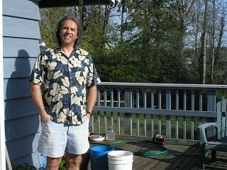
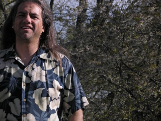
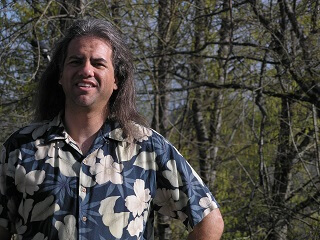

(Martin Freiwald): WEB1210 Portal
Welcome
  Cycling; Road bicycle training
Hello everybody, My name is Martin Freiwald. I'm at the end of the second year, as a student at Seattle Central Community College. My graduate major is Internet Technology, Network and Design Administration & Database Design and Administration Certificate program. I am an honor student. “ I have learned a lot of great skills. I could have never thought of, such skills. On my own time. ”
Cycle training is for ages 5 through 70. Road bicycle consists of crank set having a 52 tooth ring gear and a 39 tooth ring gear. The road bicycle is the best place to start for juniors and mens or womans up to the age of 50. Cyclist must get their bikes fitted to get the proper size of bike frame both men and women. Bicycle shops are the best place to start. By asking a bike shop to fit you to a bicycle frame by appointment or walk in visit.
The best place to learn your new bicycle is a playground or a empty parking lot with no cars in it. After adjusting your bicycle and getting it to work for you in a personal way that meets your control and comfort needs. I say control and confort needs, I am referring to you getting the most of your bicycles geometery of balance and control for all your best of times riding it.
A cyclist can burn up to 6000 calories in 90 degree tempuratures and drink 1 gallon of water for the consumption of water need to ride 100 miles. One 24 ounce bottle of water will personally last me 16 miles. So I recommend two bottle cages to carry two water bottles. If you start out rideing 3 miles round trip. You can work your way up to 5 miles, 10 miles, 15 miles, 20 miles, 30 miles then 50 miles. Once up to 50 mile you can try for 80 miles. A fondo is a bike ride of 60 miles and a grand fondo is 80 miles. A century ride is 100 miles. It is a popular ride on the calandar of events for cyclist looking for a scheduled group ride. I personaly like 50 miles and 30 miles. Mileage adds up quick. In 35 days I rode the equiventence of the Tour de Fance, 2180 miles.